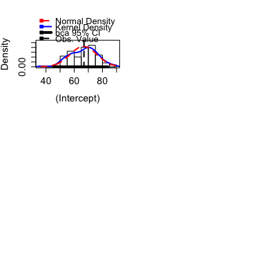
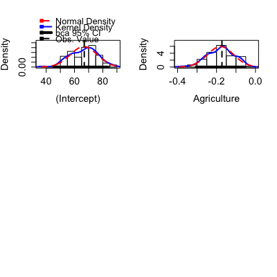
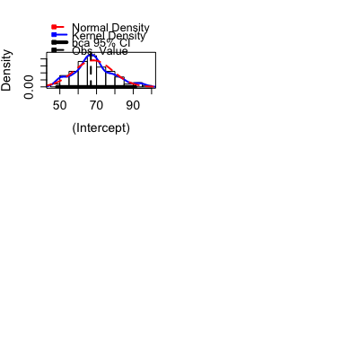
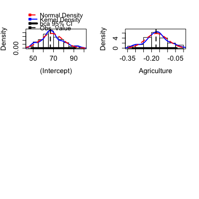
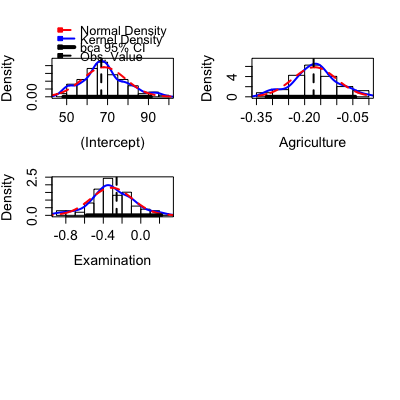
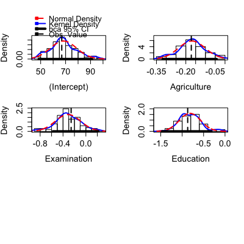

Boot(object, f = coef, labels = names(coef(object)), R = 999, method = c("case", "residual")) Boot(object, f = coef, labels = names(coef(object)), R = 999, method = c("case", "residual")) Boot(object, f = coef, labels = names(coef(object)), R = 999, method = c("case", "residual"))
lm or glm. The function may work with other regression objects that support the update
method and have a subset argument, but it will fail if the fitting method for the model is iterative and sensitive to starting values. See details below.coef, to return to
regression coefficient estimates. For example,
f = function(obj) coef(obj)[1]/coef(obj[2] will bootstrap the ratio of the first and second coefficient estimates.f. If
this argument is of the wrong length, then generic labels will be generated.
lm objects and will return an error for glm objects.This function provides a simple front-end to the boot function in the
package also called boot. Whereas boot is very general and therefore
has many arguments, the Boot function has very few arguments, but should
meet the needs of many users.
Whereas the boot function is
very general, Boot is very specific. It takes the information from a
regression object and the choice of method, and creates a function that is
passed as the statistic argument to boot. The argument R
is also passed to boot. All other arguments to boot are
kept at their default values.
The methods available for lm objects are “case” and
“residual”. The case bootstrap resamples from the joint distribution
of the terms in the model and the response. The residual bootstrap fixes the
fitted values from the original data, and creates bootstraps by adding a
bootstrap sample of the residuals to the fitted values to get a bootstrap
response. It is an implementation of Algorithm 6.3, page 271, of
Davison and Hinkley (1997). The residual bootstrap for
generalized linear models has several competing approaches, but none are
without problems. If you want to do a residual bootstrap for a glm, you
will need to write your own call to boot.
This function may fail if the model fit to any of the bootstrap samples is of lower rank than the model fit to the original data. This will occur, for example, if the model includes factors and interactions with a very small number of observations per cell. In this case bootstrap samples may have zero counts in some cells and lose rank.
See boot for the returned value from this function. The car
package includes additional generic functions, as listed below.
Davison, A, and Hinkley, D. (1997) Bootstrap Methods and their Applications. Oxford: Oxford University Press.
Fox, J. and Weisberg, S. (2011) Companion to Applied Regression, Second Edition. Thousand Oaks: Sage.
Fox, J. and Weisberg, S. (2012) Bootstrapping, http://socserv.mcmaster.ca/jfox/Books/Companion/appendix/Appendix-Bootstrapping.pdf.
S. Weisberg (2005) Applied Linear Regression, Third Edition. Wiley, Chapters 4 and 11.
m1 <- lm(Fertility ~ ., swiss) betahat.boot <- Boot(m1, R=99) # 99 bootstrap samples--too small to be useful summary(betahat.boot) # default summaryR original bootBias bootSE bootMed (Intercept) 99 66.915 -0.31884 9.4694 67.722 Agriculture 99 -0.172 -0.00706 0.0674 -0.174 Examination 99 -0.258 0.04025 0.2295 -0.225 Education 99 -0.871 -0.04302 0.1987 -0.912 Catholic 99 0.104 0.00466 0.0308 0.111 Infant.Mortality 99 1.077 0.01153 0.3874 1.097Warning message: extreme order statistics used as endpointsBootstrap quantiles, type = bca 2.5 % 97.5 % (Intercept) 45.57872 83.74182 Agriculture -0.30444 -0.05591 Examination -0.82108 0.18830 Education -1.30188 -0.48951 Catholic 0.01933 0.14641 Infant.Mortality 0.31509 1.80753Warning message: extreme order statistics used as endpoints





# Bootstrap for the estimated residual standard deviation: sigmahat.boot <- Boot(m1, R=99, f=sigmaHat, labels="sigmaHat") summary(sigmahat.boot)R original bootBias bootSE bootMed sigmaHat 99 7.17 -0.615 0.755 6.67Warning message: extreme order statistics used as endpointsBootstrap quantiles, type = bca 2.5 % 97.5 % sigmaHat 6.454 8.37
Boot objects from the boot package are
boot.array,
boot.ci,
plot.boot and
empinf. Additional
functions in the car package are
summary.boot,
confint.boot, and
hist.boot.